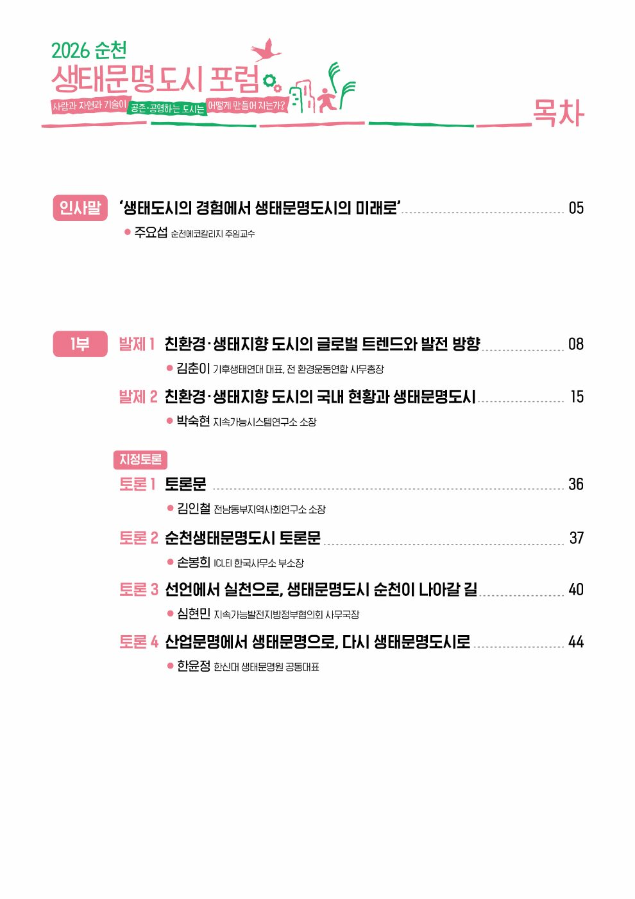

2026 순천 · 생태문명도시 포럼
함께 살아갈
도시를 묻다.
사람과 자연과 기술이
공존·공영하는 도시는
어떻게 만들어지는가?
순천의 생태도시 경험에서
생태문명도시의 미래로.
2026. 11. 27. 금요일 13:00
생태비즈니스센터 3층 컨퍼런스홀
자료집 바로 읽기
함께 배우고, 함께 바꾸는 도시
자연을 지켜 온 경험을
우리의 일상으로.
국내외 도시의 경험을 나누고, 순천과 전남광주의 현장에서 생태문명도시의 가능성을 살펴봅니다. 시민과 지방정부, 연구자와 활동가가 함께 전환의 길을 찾는 자리입니다.
PROGRAM
함께하는 시간
식전 공연 · 유토
생태활동가이자 뮤지션, 올해 촉진자 양성과정 참여자
개회 및 축사
포럼의 문을 여는 시간
세션 1친환경·생태지향 도시,
친환경·생태지향 도시,
어디까지 왔나? 어디로 가야 하나?
사회 정건화 · 발제 김춘이, 박숙현
세션 2광주전남 및 순천의
광주전남 및 순천의
친환경·생태지향 도시정책과 비전
사회 박필순 · 발제 윤희철, 김동호
열린 토론
친환경·생태지향 도시와 생태문명도시의 가능성
사회 주요섭
교류회·네트워킹
순천에코칼리지 프로젝트 발표회 참관
배움에서 시작된 현장의 실천을 만납니다.
자료집에 수록된 주요 일정입니다. 현장 안내에 따라 변경될 수 있습니다.

자료집 목차
제목을 누르면 자료가 열립니다. 쪽수는 인쇄 자료집 기준입니다.
목차 검색 · 필터
검색 결과가 없습니다. 다른 이름이나 단어로 찾아보세요.
사람과 자연과 기술,
함께 살아갈 내일.